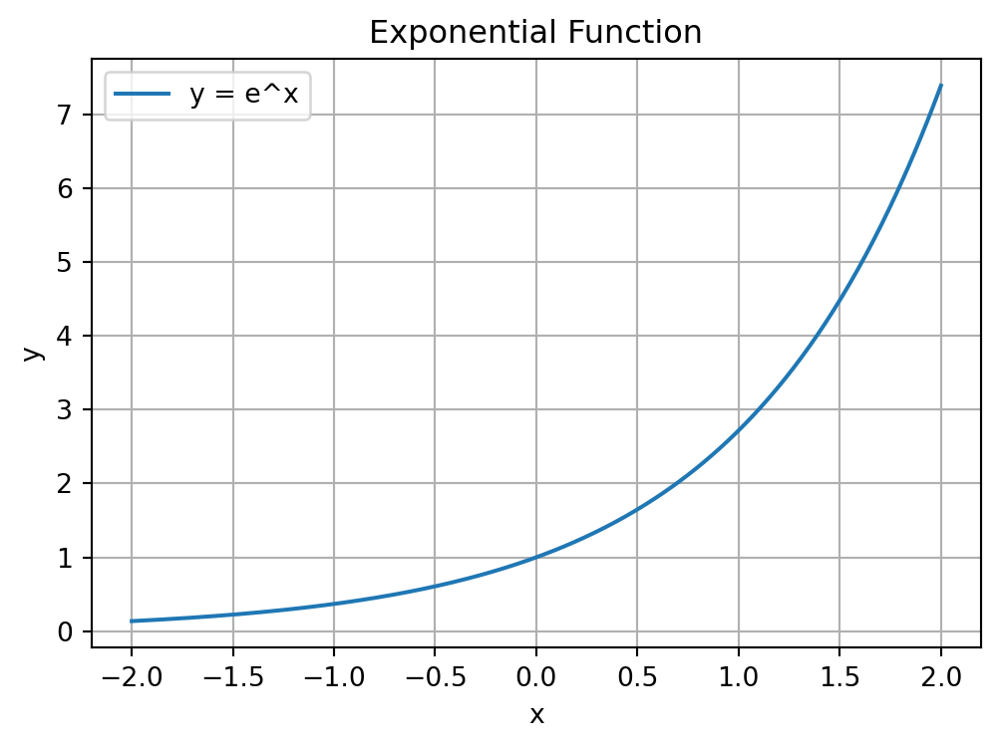
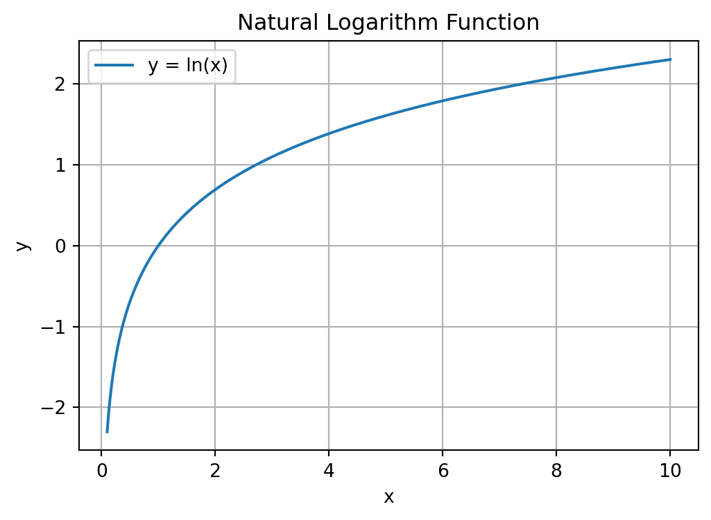

2 + 35
In this chapter we will learn how to use Python as a calculator. In Chapter 2 we already saw how to calculate 1 + 1. We will now go through some different operations. We will also learn about functions and their arguments along the way, which we will be be using again and again throughout the rest of this course.
We start with the most basic operations. Addition, subtraction, multiplication and division are given by the standard +, -, * and / operators that you would use in other programs like Excel. For example:
Addition:
2 + 35Subtraction:
5 - 32Multiplication:
2 * 36Division:
3 / 21.5It is also possible to do multiple operations at the same time using parentheses. For example, suppose we wanted to calculate: \frac{2+4}{4\times 2} = \frac{6}{8} = 0.75 We can calculate this in Python as follows:
(2 + 4) / (4 * 2)0.75Suppose by accident you left out the closing parentheses above. You typed (2 + 4) / (4 * 2 and Enter. You don’t see the output but instead see
In [1]: (2 + 4) / (4 * 2
...:Python did not run the command, but it also did not give an error. What happened is that because there was no closing parenthesis Enter moved to a new line instead of executing the command. That’s why we see the ...:. To “Escape” this situation, you just need to press the Ctrl+C button. In general, if anything strange happens in Python and you get stuck, you can always press Ctrl+C in the console to escape the current command.
x^n multiplies x by itself n times. For example, 2^3=2\times 2\times 2 = 8. In Python we use ** to do this:
2 ** 38Be very careful not to use ^ for exponentiation. This actually does a very different thing that we won’t have any use for in this course.1
Taking the absolute value turns a negative number into the same number without a minus sign. It has no effect on positive numbers.
In mathematical notation we write |x| for the absolute value of x. The formal definition is:
|x| = \begin{cases} x & \text{ if } x \geq 0 \\ -x & \text{ otherwise} \end{cases}
Here are some examples:
This is what the function looks like when we plot it for different x:
import numpy as np
import matplotlib.pyplot as plt
# Define the x range
x = np.linspace(-10, 10, 400)
# Define the absolute value function
y = np.abs(x)
# Create the plot
plt.figure(figsize=(6, 4))
plt.plot(x, y, label='y = |x|')
# Add labels and title
plt.title('Absolute Value Function')
plt.xlabel('x')
plt.ylabel('y')
# Add a grid
plt.grid(True)
# Add a legend
plt.legend()
# Show the plot
plt.show()We’ll learn how to make plots like this later in this course, but if you want to see the code generating it you can click on the button “Show code generating the plot below”.
In Python we can calculate absolute values with:
abs(-2)2abs(3)3Taking the absolute value in Python involves using what is called a function. Functions are used by calling their names and giving the arguments to the function in parentheses. When we do abs(-2), abs is the name of the function and -2 is the argument.
In many ways the functions in Python work a lot like the functions in Excel, just they might have different names or be used a bit differently. For example, in Excel you write =ABS(-2) to take the absolute value of -2. The argument is the same, and the function name only differs in that in Excel you need to use capital letters whereas in Python you use lowercase letters (in addition, Excel requires you to put an = before the function name).
When using functions it is helpful to read their help pages. You can look at this by typing help(abs) in the Console and pressing Enter. We then see:
Help on built-in function abs in module builtins:
abs(x, /)
Return the absolute value of the argument.This tells us that abs() takes a single argument and returns the absolute value.2
We will be using many different functions and it’s a good habit of to look at their help pages. The help pages will be available to you in the Exam.
The square root of a number x is the y that solves y^2=x. For example, if x=4, both y=-2 and y=2 solve this. The principal square root is the positive y from this.
Here is what the square root function looks like for different x:
import numpy as np
import matplotlib.pyplot as plt
# Define the x range (positive values because np.sqrt() not defined for negative
# values)
x = np.linspace(0, 10, 400)
# Define the square root function
y = np.sqrt(x)
# Create the plot
plt.figure(figsize=(6, 4))
plt.plot(x, y, label='y = √x')
# Add labels and title
plt.title('Square Root Function')
plt.xlabel('x')
plt.ylabel('y')
# Add a grid
plt.grid(True)
# Add a legend
plt.legend()
# Show the plot
plt.show()The principal square root a number is equal to the number exponentiated by \frac{1}{2}:
\sqrt{x} = x^\frac{1}{2}
9 ** (0.5)3.0We can follow a very similar approach to above to get the cubed root of a number, such as: \sqrt[3]{8}=8^\frac{1}{3}=2:
In Python:
8 ** (1/3)2.0Python also has a square root function, but it is not built in. We need to load this function by loading the module math. A module is a collection of additional functions and other objects that we can load in our Python script. The module math contains many mathematical functions, including the sqrt() function.
To load the math module, we need to include import math in our script before executing any of its functions. To run the sqrt() function from the math module, we need to type math.sqrt(). This “dot” notation means we use the sqrt() function within the math module.
To get \sqrt{9} then we can do:
import math
math.sqrt(9)3.0To view the help page math.sqrt(), we can use help(math.sqrt).
If you only want to use the sqrt() function from the math module, you could alternatively import the function the following way:
from math import sqrt
sqrt(9)3.0This way you don’t need to type math.sqrt() every time you want to take the square root, and only need to type sqrt(). However, it is generally preferred practice to import the math module using import math and use the function with math.sqrt(). This makes the code clearer and easier to understand.
A very important function in mathematics and statistics is the exponential function. The definition of \exp\left(x\right), or e^x, is given by: e^x = \underset{n\rightarrow \infty}{\lim} \left(1 + \frac{x}{n}\right)^n
Note: you don’t need to know or remember this definition for the exam. You only need to know how to calculate the exponential function in Python.
This is what the function looks like:
import numpy as np
import matplotlib.pyplot as plt
# Define the x range
x = np.linspace(-2, 2, 400)
# Define the exponential function
y = np.exp(x)
# Create the plot
plt.figure(figsize=(6, 4))
plt.plot(x, y, label='y = e^x')
# Add labels and title
plt.title('Exponential Function')
plt.xlabel('x')
plt.ylabel('y')
# Add a grid
plt.grid(True)
# Add a legend
plt.legend()
# Show the plot
plt.show()
In Python we can use the exp() function from the math module to calculate the exponential of any number:
math.exp(1)2.718281828459045Another common mathematical function is the logarithm, which is like the reverse of exponentiation.
The log of a number x to a base b, denoted \log_b\left(x\right), is the number of times we need to multiply b by itself to get x. For example, \log_{10}\left(100\right) = 2, because 10\times 10=100. We need to multiply the base b=10 by itself twice to get to x=100.
A special logarithm is the natural logarithm, \log_e(x), which is the logarithm to the base \exp(1)=e^1\approx 2.7183. This is also written as \ln(x).
This is what the function looks like:
import numpy as np
import matplotlib.pyplot as plt
# Define the x range (positive values only, since ln(x) is undefined for non-positive x)
x = np.linspace(0.1, 10, 400) # Start from 0.1 to avoid log(0), which is undefined
# Define the natural logarithm function
y = np.log(x)
# Create the plot
plt.figure(figsize=(6, 4))
plt.plot(x, y, label='y = ln(x)')
# Add labels and title
plt.title('Natural Logarithm Function')
plt.xlabel('x')
plt.ylabel('y')
# Add a grid
plt.grid(True)
# Add a legend
plt.legend()
# Show the plot
plt.show()
In Python we use the log() function from the math module to calculate the natural logarithm:
import math
math.log(1)0.0What if we want to calculate the logarithm to a base other than e? If we look at the help page for log() using help(math.log), we see:
Help on built-in function log in module math:
log(...)
log(x, [base=math.e])
Return the logarithm of x to the given base.
If the base not specified, returns the natural logarithm (base e) of x.We can see that the log() function can take 2 arguments:
x: the number we want to take the log of.base: the base with respect to which the logarithms are computed. The default is math.e which equals the value of e\approx 2.718. Because this argument is contained in a square bracket, it means it is an optional argument. If we don’t provide it it will use the default.This is the first time that we have seen a function with more than one argument. Earlier when we used the math.log() to calculate the natural logarithm we only used one argument because we used the default setting for the base. But when we want to use a base other than e, we need to specify it.
To calculate \log_{10}\left(100\right) in Python is then done as follows:
import math
math.log(100, 10)2.0We write both arguments into the math.log() function, separated by commas.
The math module contains many more mathematical functions. To see all the functions available in the math module, we can use the command dir(math). You will see many familiar mathematical functions, such as the trigonometric functions sin(), cos(), and tan().
When we divide 7 by 3 we get 2\frac{1}{3}. We could alternatively say that “7 divided by 3 equals 2 with remainder 1”. When programming it is often useful to get these numbers. The tutorial exercises will have several examples of this!
We can perform “integer division” with the // operator. This always returns the fraction rounded down to the nearest whole number:
7 // 32To get the remainder we use the modulus operator %:
7 % 31Together then 7/3 is 2 with remainder 1.
One thing to note is that integer division with negative numbers doesn’t round to the integer closest to zero, but always down. So:
-7 // 3-3and:
7 // -3-3both give -3 and not -2
For example, 2^3 converts 2 and 3 to binary (10 and 11 respectively) and then does a “bitwise excluse OR operation” on these (which results in 01) and converts it back to in integer (which is 1). So 2 ** 3 gives 8 but 2^3 gives 1.↩︎
The forward slash in abs(x, /) marks the end of the positional-only arguments in the function. The abs() function takes only one argument, so you can think of this slash as meaning there is only one argument to abs(). Some functions like the math.log() function that we will see below have two arguments (the number we are taking the log of and the base) and the position (order) of the arguments we provide matter. Other functions, such as the print() function we have already encountered, allow you to provide arguments by a keyword (see help(print) for these).↩︎